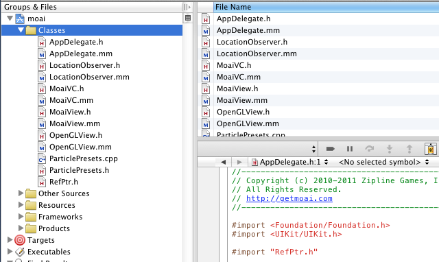
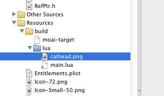
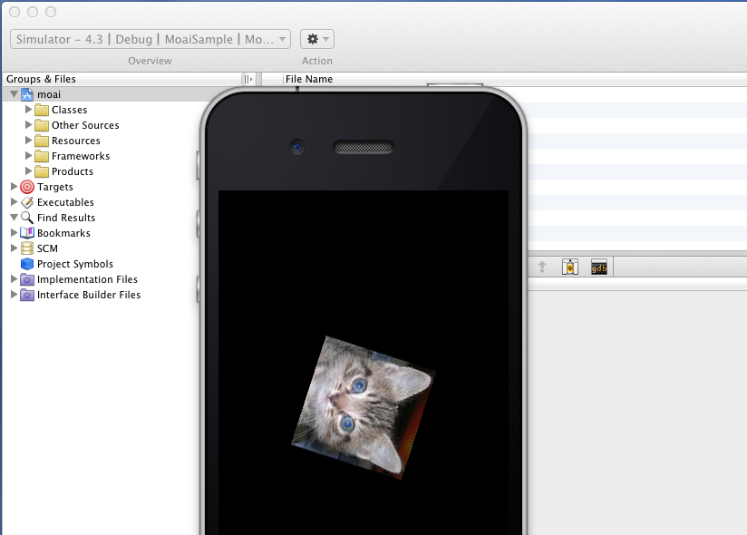

Building Moai Games For iOS Devices
Running on iOS with Xcode
Building and deploying to an iOS device requires use of Xcode and the latest iOS SDK, which can be found at Apple's developer website. Once you have Xcode installed, open the Moai Xcode sample project located at 'hosts/xcode-ios/moai.xcodeproject'. The sample project is set up to link to the Moai static libraries in bin/ios.
Before building, it's worth taking a closer look at the Xcode project structure.

There is a small set of code files under the 'Classes' folder at the top of the project. These are the files that make up the Moai host. There is also a folder called 'Other Sources'. This folder contains the 'main' for the iOS app and the precompiled header.
The 'Resources' folder contains the app icons required by iOS, and a few other standard resource files. It also contains a subfolder 'build' which contains a file called 'moai-target' and a folder reference called 'lua'. By default, these two files should be shown in red because they don't exist until the project is built. The function of this folder is explained in greater detail below.
Finally, the 'Frameworks' folder contains references to the frameworks and static libraries required by the targets and the 'Products' folder contains references to the products built by the targets.
The project group structure outlined above is not specific to Moai; it is the standard layout recommended by Apple for iOS application projects.
During the iOS build process, a package script runs which reads the contents of the 'moai-target' file in the 'Resources/build' project folder in order to locate the project's Lua resources. The script copies the entire content of this target folder into the Lua reference folder (also found in the 'Resources/build' project folder) and marks the contents as read-only (to indicate they should not be edited). The standard iOS bundle creation continues and the Lua resources are included in the package under a folder called 'lua'. The AppDelegate file then executes a file called 'main.lua' in the 'lua' folder of your package. You can change this behavior by editing the AppDelegate file if you wish. This setup allows you to quickly try out any of the samples provided in the SDK. Simply point it at a new folder and the MoaiSample host will play the contents of that folder.

There are a few additional features built into this packaging script. First, you can include any number of references, one per line, and the package script will grab the contents of each and combine them in your Lua reference folder. This is useful if you want to place general files somewhere besides your project folder.
Another feature of the packaging script is the ability to define folder dependencies within the folders themselves. For example, the 'samples/iphone/app-apsalar' sample depends on the Apsalar Lua module included elsewhere within the SDK. This folder contains a file called 'moai-target-ext'. When a target folder is packaged, the script checks for the existence of this file. If it's there, the package script is called recursively on the folders listed in this extension file. This allows you to point your main 'moai-target' file at the 'app-apsalar' folder and have its dependency copied automatically.
Building for the device simulator is simple: using Xcode 3, select 'Simulator' and 'Debug' from the build configuration dropdown. Now select 'Build and Debug' from the 'Build' menu. You should see some build output in the 'Build Results' view of Xcode. A few seconds after the build is finished, the iOS simulator should appear, complete with the now-familiar spinning cat head.

To build and deploy on an iOS device, just select 'Device' from the build configuration dropdown instead of 'Simulator'.
Note that if these instructions do not match the behavior and appearance of your Xcode 3 setup, you may not be using Xcode in its 'all in one' mode. To set up the all in one mode, go to 'General/Preferences...' and select the 'General' tab. From the 'Layout' drop down select 'All-In-One'. When you reopen the Moai solution, Xcode should now be in all in one mode. Note also that you cannot edit this preference if you have any open projects in Xcode, so close your projects beforehand.
Troubleshooting
There are a few common errors that may crop up during this process. If you are told that Xcode does not have permission to open package.sh (or any other shell file), you will have to grant this position manually through a terminal window. Use the Finder to locate the script on your computer, then navigate to the containing folder via the terminal and use the command "chmod +x